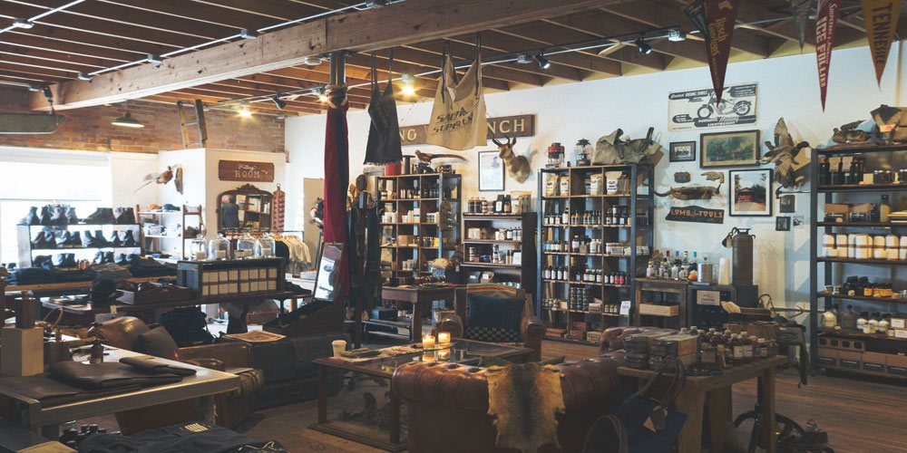

<ion-header>
  <ion-toolbar>
    <ion-title>Settings</ion-title>
  </ion-toolbar>
</ion-header>

<ion-content>
  <ion-card>
    <ion-card-content>
      
    </ion-card-content>
  </ion-card>
  <br />
  <ion-grid fixed>
    <ion-row>
      <ion-col size="12">
        <ion-item>
          <ion-label
            style="
              text-align: center;
              font-size: 14px;
              justify-content: space-evenly;
            "
            >Toggle Between Dark & Light Themes</ion-label
          >
          <ion-toggle (ionChange)="onToggleColorTheme($event)"></ion-toggle>
        </ion-item>
      </ion-col>
    </ion-row>
  </ion-grid>
</ion-content>

<ion-footer style="text-align: center">
  <ion-toolbar>
    <ion-title style="font-size: 12px"
      >2021 Copyrights of TMISC (SME-K) INV</ion-title
    ><br />
  </ion-toolbar>
</ion-footer>
<ion-footer
  class="ion-no-border"
  style="text-align: center; font-size: 14px; justify-content: space-evenly"
>
  <ion-toolbar>
    <ion-label>Implemented & Designed by Mompati Mfazo</ion-label><br />
    <ion-label>TMISC v0.0.1</ion-label>
  </ion-toolbar>
</ion-footer>
